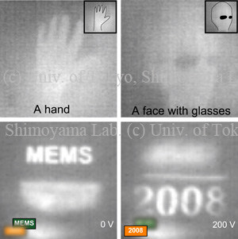

Silison Fresnel lens for thermal imaging
We propose that thin and light-weighted silicon Fresnel lenses is suit for thermal imaging. We adopted a one-mask process with photolithography and inductive coupled plasma reactive ion etching (ICP-RIE) to fabricate silicon three-dimensional structure. Thermal image was taken with a Fresnel lens, which we designed with ray-trace method and fabricated with the three-dimensional (3D) fabrication process. Thermal cameras have been expensive because germanium lenses are difficult to be machined. Since the 3D fabrication process suits mass production compared with other method like multi-level lithography, competitive-price FIR optical systems can be realized.
Publications
- Tomoyuki Takahata, Kiyoshi Matsumoto, Isao Shimoyama, “Far-Infrared Fresnel Lens for Thermal Imaging,” IEEJ Transactions on Sensors and Micromachines, vol. 133, no. 7, pp. 274-279, 2013. (Full text is in Japanese) [Paper]
Tilted Paraboloidal Reflective Lens for Far Infrared Sensor

A tilted paraboloidal reflective lens for focusing far infrared (FIR) rays has been devised. Tilted paraboloids with smooth surface and vertical walls were fabricated by two-step etching using microloading effect with a mask which had rectangular openings of various sizes. FIR light was focused by a 30-degree-tilted paraboloid lens. The size of a real image of an FIR source was 110 µm, which agrees with a lens formula.
Publications
- Makoto Ohira, Yutaka Koyama, Fumiji Aita, Sho Sasaki, Masatoshi Oba, Isao Shimoyama, Tomoyuki Takahata, and Masafumi Kimata, “Micro Mirror Arrays for Improved Sensitivity of Thermopile Infrared Sensors,” The 24th IEEE International Conference on Micro Electro Mechanical Systems (MEMS ’11), pp. 708-711, Cancun, Mexico, 23-27 January, 2011. [Proceedings]
- Tomoyuki Takahata, Kiyoshi Matsumoto, and Isao Shimoyama, “Tilted Paraboloidal Reflective Lens for Far Infrared Sensor Fabricated by Mask with Rectangular Openings,” The 22nd IEEE International Conference on Micro Electro Mechanical Systems, pp.975-978, Sorrento, Italy, January 26-29, 2009. [Proceedings]
Varifocal Infrared Imaging Lens by Parylene-on-Liquid-Deposition
We report varifocal infrared imaging lenses for miniature infrared cameras. A droplet of liquid paraffin is sandwiched between a silicon substrate and a thin film of Parylene. Parylene is deposited directly onto the droplet’s surface. Two electrodes are fabricated on both sides of the lens. When a voltage is applied, electrodes attract each other and the liquid is pushed toward lens center. Consequently the curvature of the lens increases. The transmittance of the structure with 0.2 mm thick liquid paraffin was about 10%. Infrared images of human body emission were obtained. Images were clear even when the focal length was tuned. The focal length of the 7-mm-diameter lens shortened to 43% of its initial value.
Publications
- Hiroyuki Kojo, Nguyen Binh-Khiem, Tomoyuki Takahata, Eiji Iwase, Kiyoshi Matsumoto, Isao Shimoyama, “Varifocal Infrared Imaging Lens by Parylene-on-Liquid-Deposition,” Asia-Pacific Conference on Transducers and Micro-Nano Technology 2008 (APCOT '08), 2S32, Tainan, Taiwan, June 22-25, 2008.